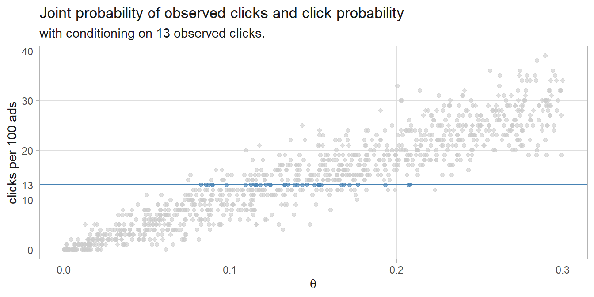
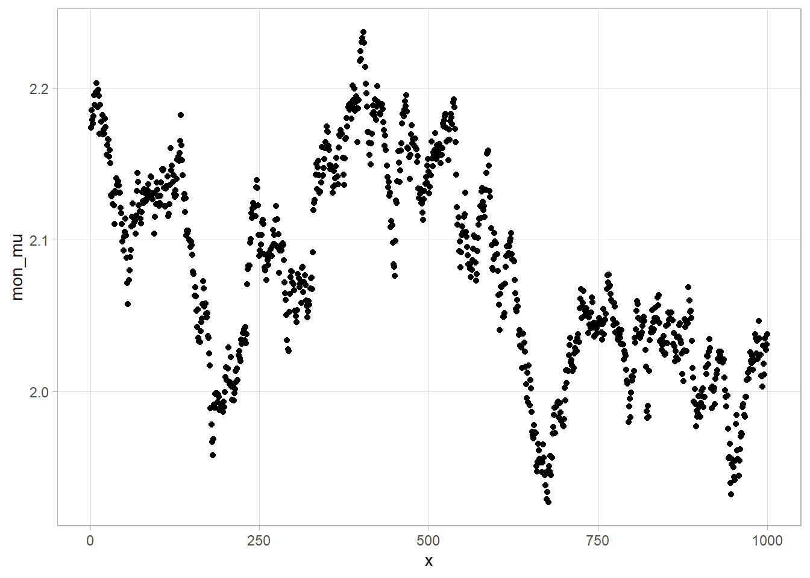
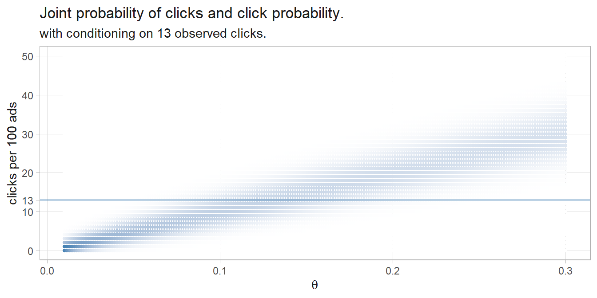
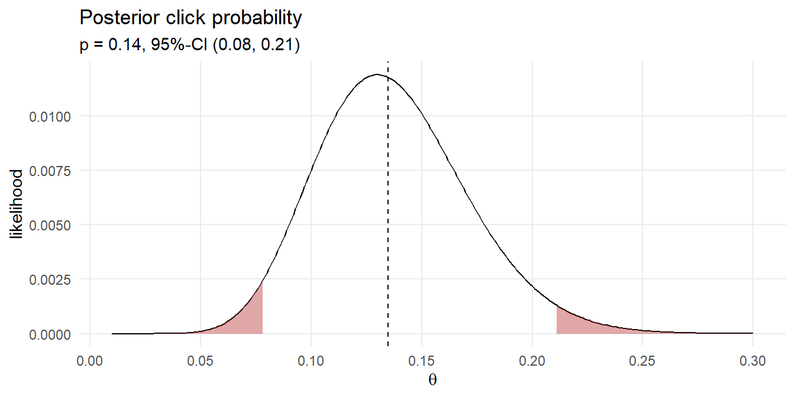
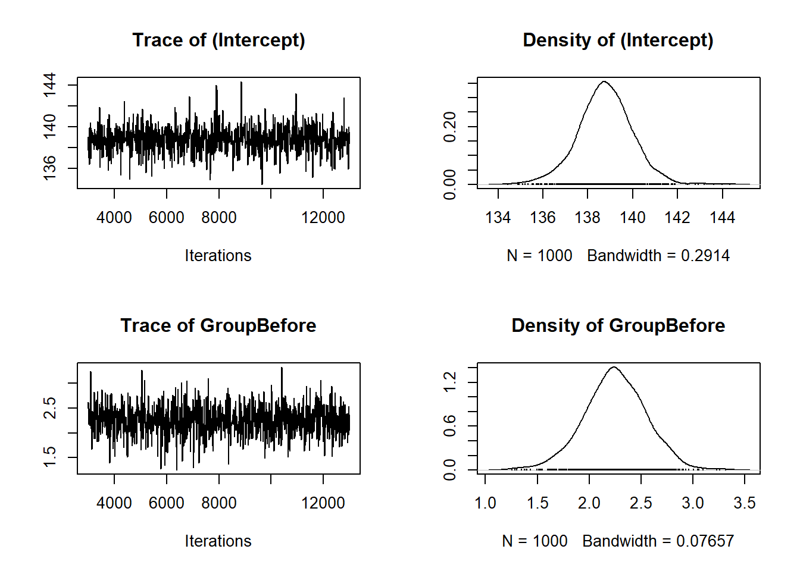
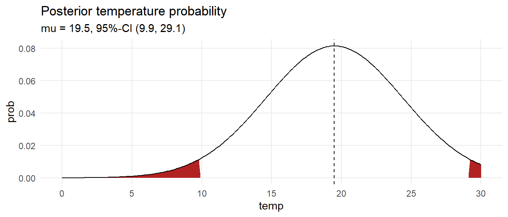

3.10 Appendix: Gentle Introduction
Suppose you purchase 100 ad impressions on a web site and receive 13 clicks. How would you describe the click rate? The classical approach is to construct a 95% CI around the click proportion with a one-sample proportion test.5
##
## 1-sample proportions test with continuity correction
##
## data: 13 out of 100, null probability 0.5
## X-squared = 53.29, df = 1, p-value = 2.878e-13
## alternative hypothesis: true p is not equal to 0.5
## 95 percent confidence interval:
## 0.07376794 0.21560134
## sample estimates:
## p
## 0.13
How might you estimate \(\theta\) with Bayesian statistics? One approach is to run 1,000 experiments that sample 100 ad impression events from an rbinom() generative model using a uniform prior distribution of 0-30% click probability. The resulting 1,000 row data set of click probabilities is the prior predictive distribution of \(D\), the denominator of Bayes’ Theorem. The subset where \(D = 13\) is the likelihood, \(P(D|\theta)\). The sampled \(\theta\)’s are the prior, \(P(\theta) = \text{unif}(.0, .3)\). Their product is the joint probability distribution, \(P(D|\theta)P(\theta)\), the numerator of Bayes’ Theorem. This method is called rejection sampling because you sample across the whole parameter space, then condition on the observed evidence.
df_sim <- tibble(
click_prob = runif(1000, 0.0, 0.3),
click_n = rbinom(1000, 100, click_prob)
)
df_sim %>%
mutate(is_13 = factor(click_n == 13, levels = c(TRUE, FALSE))) %>%
ggplot(aes(x = click_prob, y = click_n, color = is_13)) +
geom_point(alpha = 0.6, show.legend = FALSE) +
geom_hline(yintercept = 13, color = "steelblue", linetype = 1, linewidth = .5) +
scale_color_manual(values = c("TRUE" = "steelblue", "FALSE" = "gray80")) +
scale_y_continuous(breaks = c(seq(0, 40, 10), 13)) +
labs(title = "Joint probability of observed clicks and click probability",
subtitle = "with conditioning on 13 observed clicks.",
y = "clicks per 100 ads",
x = expression(theta))
Condition the joint probability distribution on the 35 rows that produced 13 observed clicks to update the prior. The quantile() function returns the median and the .025 and .975 percentile values - the credible interval.
# median and credible interval
(sim_ci <- df_sim %>% filter(click_n == 13) %>% pull(click_prob) %>%
quantile(c(.025, .5, .975)))## 2.5% 50% 97.5%
## 0.08515107 0.13482593 0.20752541The posterior click rate likelihood is 13.5% with 95% credible interval (8.5%, 20.8%). Here is the density plot of the 35 simulations that produced the 13 clicks. The median and 95% credible interval are marked.
df_sim %>%
filter(click_n == 13) %>%
ggplot(aes(x = click_prob)) +
geom_density() +
geom_vline(xintercept = sim_ci[2]) +
geom_vline(xintercept = sim_ci[1], linetype = 2) +
geom_vline(xintercept = sim_ci[3], linetype = 2) +
# coord_cartesian(xlim = c(0, .3)) +
scale_x_continuous(breaks = c(seq(0, .3, .05), sim_ci), labels = percent_format(.1)) +
labs(title = "Posterior click likelihood distribution",
subtitle = glue("p = {percent(sim_ci[2], .1)}, 95%-CI (",
"{percent(sim_ci[1], .1)}, {percent(sim_ci[3], .1)})"),
x = expression(theta), y = "density (likelihood)")
That’s pretty close to the classical result! Instead of sampling, you could define a discrete set of candidate click probabilities and calculate the click probability density for the 100 ad impressions. This method is called grid approximation.
df_bayes <- expand.grid(
click_prob = seq(0.01, .30, by = .001),
click_n = 0:100
) %>%
mutate(
prior = dunif(click_prob, min = 0, max = 0.3),
likelihood = dbinom(click_n, 100, click_prob),
probability = likelihood * prior / sum(likelihood * prior)
)
df_bayes %>%
mutate(is_13 = factor(click_n == 13, levels = c(TRUE, FALSE))) %>%
# filter(probability > .0001) %>%
ggplot(aes(x = click_prob, y = click_n, color = is_13)) +
geom_point(aes(color = probability), show.legend = FALSE, size = 1) +
geom_hline(yintercept = 13, color = "steelblue", linetype = 1, linewidth = .5) +
coord_cartesian(ylim = c(0, 50)) +
scale_y_continuous(breaks = c(seq(0, 50, 10), 13)) +
scale_color_gradient(low = "#FFFFFF", high = "steelblue") +
# scale_color_manual(values = c("TRUE" = "steelblue", "FALSE" = "gray20")) +
labs(title = "Joint probability of clicks and click probability.",
subtitle = "with conditioning on 13 observed clicks.",
y = "clicks per 100 ads",
x = expression(theta))
Condition the joint probability distribution on the 13 observed clicks to update your prior. Resample the posterior probability to create a distribution.
df_bayes_13 <- df_bayes %>% filter(click_n == 13) %>%
mutate(posterior = probability / sum(probability))
sampling_idx <- sample(
1:nrow(df_bayes_13),
size = 10000,
replace = TRUE,
prob = df_bayes_13$posterior
)
sampling_vals <- df_bayes_13[sampling_idx, ]
(df_bayes_ci <- quantile(sampling_vals$click_prob, c(.025, .5, .975)))## 2.5% 50% 97.5%
## 0.078975 0.135000 0.210000
You can use a Bayesian model to estimate multiple parameters. Suppose you want to predict the water temperature in a lake on Jun 1 based on 5 years of prior water temperatures.
You model the water temperature as a normal distribution, \(\mathrm{N}(\mu, \sigma^2)\) with a prior distribution \(\mu = \mathrm{N}(18, 5^2)\) and \(\sigma = \mathrm{unif}(0, 10)\) based on past experience.
Using the grid approximation approach, construct a grid of candidate \(\mu\) values from 8 to 30 degrees incremented by .5 degrees, and candidate \(\sigma\) values from .1 to 10 incremented by .1 - a 4,500 row data frame.
For each combination of \(\mu\) and \(\sigma\), the prior probabilities are the densities from \(\mu = \mathrm{N}(18, 5^2)\) and \(\sigma = \mathrm{unif}(0, 10)\). The combined prior is their product. The likelihoods are the products of the probabilities of observing each temp given the candidate \(\mu\) and \(\sigma\) values.
mdl_grid_2 <- mdl_grid %>%
mutate(
mu_prior = map_dbl(mu, ~dnorm(., mean = 18, sd = 5)),
sigma_prior = map_dbl(sigma, ~dunif(., 0, 10)),
prior = mu_prior * sigma_prior, # combined prior,
likelihood = map2_dbl(mu, sigma, ~dnorm(temp, .x, .y) %>% prod()),
posterior = likelihood * prior / sum(likelihood * prior)
)
Calculate a credible interval by drawing 10,000 samples from the grid with sampling probability equal to the calculated posterior probabilities. Use the quantile() function to estimate the median and .025 and .975 quantile values.
## Warning: Unknown or uninitialised column: `posterior`.sampling_vals <- mdl_grid[sampling_idx, c("mu", "sigma")]
mu_ci <- quantile(sampling_vals$mu, c(.025, .5, .975))
sigma_ci <- quantile(sampling_vals$sigma, c(.025, .5, .975))
ci <- qnorm(c(.025, .5, .975), mean = mu_ci[2], sd = sigma_ci[2])
data.frame(temp = seq(0, 30, by = .1)) %>%
mutate(prob = map_dbl(temp, ~dnorm(., mean = ci[2], sd = sigma_ci[2])),
ci = if_else(temp >= ci[1] & temp <= ci[3], "Y", "N")) %>%
ggplot(aes(x = temp, y = prob)) +
geom_area(aes(y = if_else(ci == "N", prob, 0)),
fill = "firebrick", show.legend = FALSE) +
geom_line() +
geom_vline(xintercept = ci[2], linetype = 2) +
theme_minimal() +
scale_x_continuous(breaks = seq(0, 30, 5)) +
theme(panel.grid.minor = element_blank()) +
labs(title = "Posterior temperature probability",
subtitle = glue("mu = {ci[2] %>% scales::number(accuracy = .1)}, 95%-CI (",
"{ci[1] %>% scales::number(accuracy = .1)}, ",
"{ci[3] %>% scales::number(accuracy = .1)})"))
What is the probability the temperature is at least 18?
pred_temp <- rnorm(1000, mean = sampling_vals$mu, sampling_vals$sigma)
scales::percent(sum(pred_temp >= 18) / length(pred_temp))## [1] "55%"This section is my notes from DataCamp course Fundamentals of Bayesian Data Analysis in R. It is an intuitive approach to Bayesian inference.↩︎